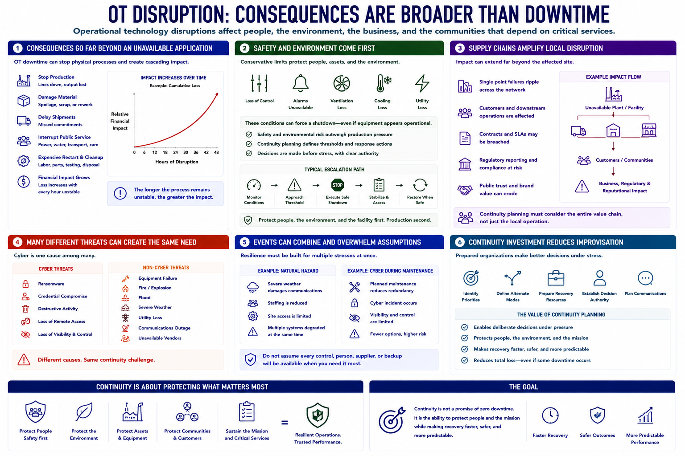

Why OT Continuity Planning Matters
Connecting to LMS... Progress: in progress

Narration
OT disruption can produce consequences far beyond an unavailable application. Downtime may stop production, damage material, delay shipments, interrupt public service, or require expensive restart and cleanup. The financial impact can increase with every hour the process remains unstable.
Safety and environmental consequences may dominate the decision. Loss of control, alarms, ventilation, cooling, or utility support can force a shutdown even when equipment still appears operational. Continuity planning defines conservative thresholds before teams face those choices under pressure.
Supply chains can amplify local disruption. A single unavailable plant, terminal, treatment facility, or distribution node may affect customers and downstream operations. Contractual commitments, regulatory reporting, and public trust add further impact.
Cyber incidents are one cause among many. Ransomware, destructive activity, credential compromise, or loss of remote access may interrupt visibility and control. Equipment failure, fire, flood, severe weather, utility loss, communications outages, and unavailable vendors can create similar continuity demands.
Events can combine. A natural hazard may reduce staffing while damaging communications. A cyber incident may occur during planned maintenance when redundancy is already limited. Plans should avoid assuming that every control, person, supplier, and backup remains available at once.
Continuity investment reduces improvisation. It identifies priorities, alternate modes, recovery resources, decision authority, and communication before an incident. The value is not a promise of zero downtime; it is the ability to protect people and the mission while making recovery faster, safer, and more predictable.